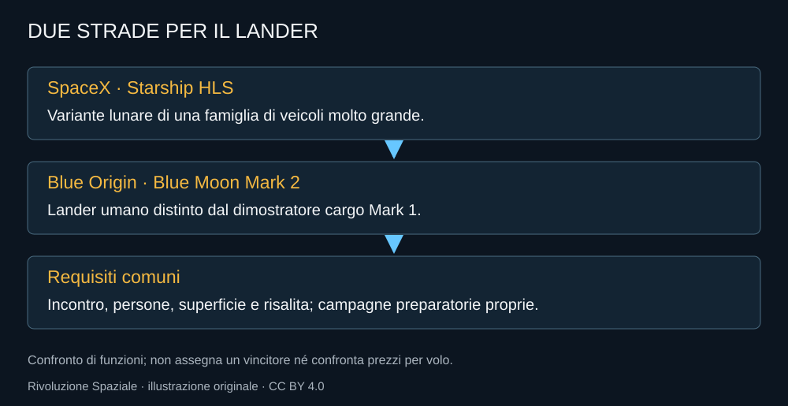

La scelta SpaceX cambia la scala visibile del lander. Starship HLS nasce da una famiglia di veicoli molto grande e trasferisce parte di quell’ambizione alla missione lunare. Il suo valore potenziale non sta soltanto nel volume: sta nella possibilità di portare persone e risorse dentro un’architettura che, se maturasse, potrebbe sostenere operazioni più ampie.
Il contratto non è l’allunaggio
NASA seleziona SpaceX nel 2021 con un contratto iniziale di circa 2,89 miliardi di dollari per sviluppo e dimostrazione. Il prezzo dell’accordo non è il prezzo unitario di una missione già disponibile. Include lavoro per raggiungere una capacità, dentro requisiti e verifiche.
Il resoconto dell’epoca assegnava alla missione Artemis III un ruolo che nel 2026 è cambiato. Questo libro conserva la selezione come storia e usa i documenti più recenti per il piano operativo. Non basta citare il nome del contratto per aggiornare l’architettura.
Una variante, non la nave terrestre senza modifiche
Il lander non deve affrontare il rientro atmosferico terrestre della Ship. Deve invece sostenere la permanenza nello spazio, il trasferimento degli astronauti e le operazioni sulla superficie. Gli apparati umani e il modo di uscire verso il terreno sono lavori specifici.
Un volume grande offre libertà di progetto e richiede comunque energia, controllo termico e supporto vitale. Le risorse possono essere abbondanti rispetto a un veicolo piccolo, ma devono restare utilizzabili. La capacità teorica di carico non certifica un ambiente abitabile.

Il rifornimento è parte della missione
La preparazione di una nave per la destinazione lunare richiede operazioni che vanno oltre la singola partenza. Portare propellenti nello spazio, trasferirli e conservarli implica una campagna. Se una funzione essenziale manca, la grande nave non possiede ancora la capacità complessiva.
Il test interno di trasferimento nel terzo volo Starship del 2024 è un passo utile. Non è il rifornimento fra due veicoli. Nella storia tecnica questi risultati devono restare distinti per non trasformare una prova parziale nella conclusione dell’intero percorso.
Una dimostrazione prima delle persone
La discesa lunare non abitata serve a verificare operazioni che non possono essere qualificate dal solo rientro di una Ship sull’oceano. La Luna ha un ambiente diverso e non offre l’atmosfera per la discesa aerodinamica terrestre. Cambiano anche terreno, polvere e possibilità di risposta.
Le persone aggiungono requisiti propri. Un apparato che può essere accettabile in una nave sperimentale senza equipaggio può non esserlo in un lander umano. La cultura di prova di SpaceX deve quindi convivere con la qualificazione richiesta da NASA.
Il programma grande e il compito preciso
SpaceX ha una prospettiva marziana e una macchina industriale che non dipendono soltanto da Artemis. Questo può fornire risorse e apprendimento; richiede anche di distinguere gli obiettivi di ciascuna versione. Un successo del trasporto Starlink non esegue automaticamente la missione HLS.
La monografia Starship segue la famiglia completa. Qui il criterio è più stretto: quale parte della capacità lunare è stata verificata e quale deve ancora esserlo. L’ambizione acquista credibilità quando riesce a rispondere a quel compito preciso.
Fonti pubbliche e tracce
- NASA, selezione SpaceX HLS, 16 aprile 2021. Contratto iniziale e requisiti; architettura storica da non confondere con calendario 2026.
- NASA, test criogenico durante Flight 3 Starship. Trasferimento interno fra serbatoi, non rifornimento fra due navi.
- NASA, come il test Artemis III prepara gli allunaggi, 15 luglio 2026. Prova di rendezvous e docking, non allunaggio Artemis III.
- NASA OIG, gestione dei contratti HLS, marzo 2026. Rapporto sui contratti e addendum sul piano del febbraio 2026.